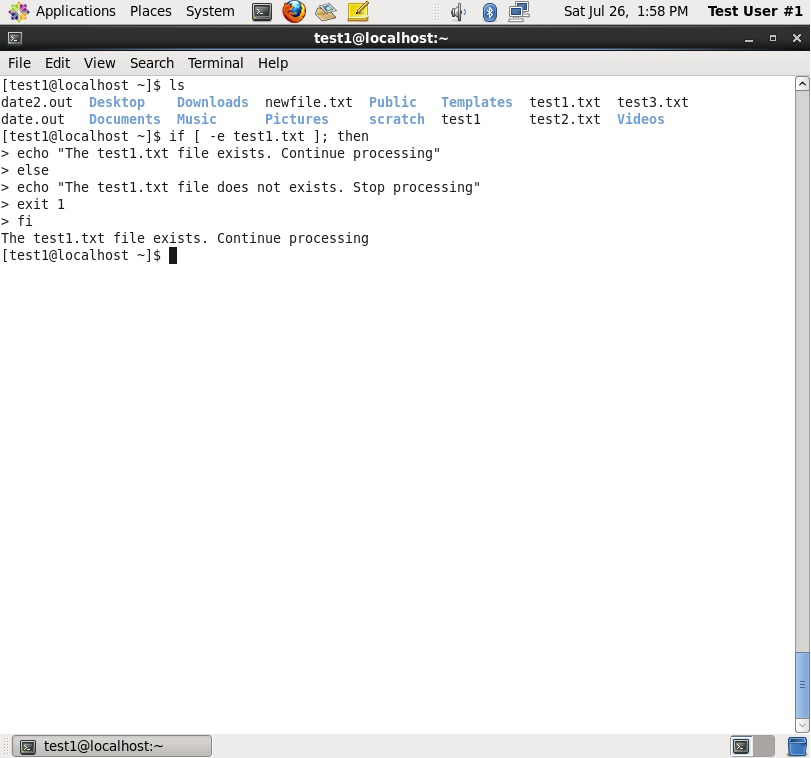
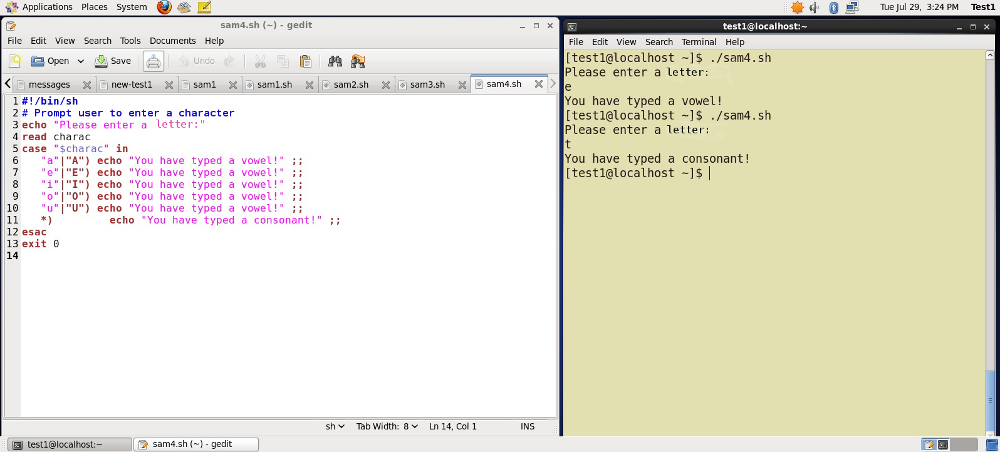
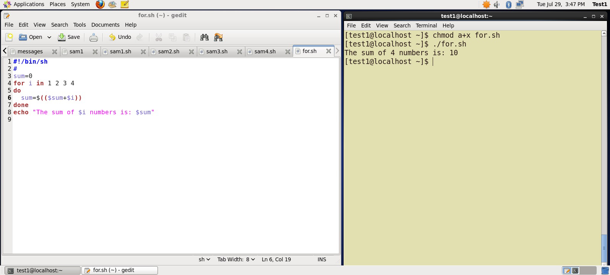
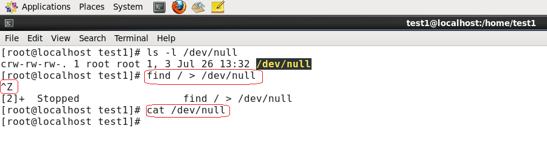

زى ماتعلمنا فى ال chapter اللى قبل كده عن ال shell script النهارده هانتعمق اكتر فيه و هانعرف حاجات زيادة
ال string ممكن يكون اى حاجة مجموعة ارقام رموز زى abcde, 123, abcde 123, abcde-123, &acbde=%123
بعض العمليات المتاحة لل string
طيب لو عايزين ناخد جزء معين من string نقارنه مثلا او نعمل عليه عملية معينة
هاستخدم الامر ${string:0:1}
ال 0 هنا معناها انك ابدا من الحرف الاول و خد لحد الحرف رقم 1 وهو تانى حرف
طيب لو عايز كل الحروف اللى بعد (.) هاكتبها بالطريقة ديه .. ${string#*.}
مثال توضيحى اكتر من الفيديو ده الفيديو من هنا
مثال تانى فى الفيديو ده الفيديو من هنا
و هى المتغيرات اللى ليها قيمة محددة من اتنين true او false
و بنوضح ال boolean expressions عن طريق العمليات ديه :
اقدر استخدم ال boolean expressions فى حالات كتير زى المقارتة بين الارقام او لو عايز اعرف اذا كان ملف ما موجود ولا لا زى المثال اللى فى الصورة
و هى بتستخدم فى حالة ان عندى متغير ممكن يكون ليه اكتر من قيمة و عايز انفذ عملية ما على حسب القيمة ديه عشان كده بستخدم ال case عشان اقارن بينهم
طيب سؤال هنا .. ايه الفرق بينها و بين ال if و انهى احسن
فى الحقيقة هما الاتنين بينفذوا نفس الحاجة بس case ليها فوائد فى استخدامها اكتر زى :
شكل ال case فى الكود بيكون بالشكل ده
case expression in
pattern1) execute commands;;
pattern2) execute commands;;
pattern3) execute commands;;
pattern4) execute commands;;
* ) execute some default commands or nothing ;;
esac
مثال عليها هانشوفوه اوضح فى الصورة ديه
استخدام ال loop هو التكرار .. انى عايز اكرر عملية معينة اكتر من مره
و العملية بتتكرر طول ما فيه حالة ما بتتحقق و بتكون ب true و اول ماتوصل ل false بيوقف التكرار
انواع ال loop فى ال shell script تلاتة هما
التكرار هنا بيحصل بعدد مرات انا محدده الاول و بعرف ساعتها هو هايوقف امتى
و بيكون شكلها فى الكود كده :
for variable-name in list
do
execute one iteration for each item in the
list until the list is finished
done
مثال توضيحى عليها
مثال تانى ل for مع استخدام case فى الفيديو هنا
بتبدا الاول تشوف الحالة اللى المفروض توقف عندها و بعدين تنفذ العملية المطلوبة منها
و بيكون شكلها كده
while condition is true
do
Commands for execution
done
مثال يوضح اكتر استخدام ال while فى الفيديو من هنا
هى عكس while فى الحالة .. يعنى هى بتشوف الحالة اللى المفروض توقف عندها بس لو كانت ب false بتتنفذ و لو كانت ب true مش بتتنفذ
و بتتكتب بالاسلوب ده
until condition is false
do
Commands for execution
----
done
مثال توضيحى لل while فى الفيديو من هنا
اوقات كتير و احنا بنكتب script بيحصل بعض الاخطاء سواء كان كلمة مكتوبة غلط او ملف بجيب او بودى ليه معلومات مش موجود او امر مش فى محلة
و كل الحاجات ديه بتوقف ال script و يقولى وقتها انها error و فايدة ال debug هى انى اقدر اشوف هو فين ال error ده بالظبط
قبل ما نصلح المشكلة لازم نعرف هى فين من الاساس وال bash بيساعدنا اننا نعمل debug عن طريق الامر bash –x ./script_file
و ساعتها هايساعدنى انى اعرف فين المشكلة لانه بيقدر يمشى على ال script كله سطر سطر
و بيظهر كل امر مكتوب قبل ماينفذه
و بيقدر كمان انه يعمل debug لجزء معين للكود مش الكود كله
و ده عن طريق set -x عشان ابدا ال debug
و الامر set +x عشان انهى ال debug
اول حاجة هانشوفها هى لو عايز اعمل ملف مؤقت اقدر احط فيه معلومات كتيرة و انا شغال على برنامج لو افترضنا انهم الف سطر
ممكن استعمل ملف مؤقت احط فيه المعلومات ديه و اسجلها فيه
و ده ليه مميزات كويسة ان المعلومات ديه هاتكون امنة لانها هاتختفى اول ما البرنامج يخلص فا ماحدش هايقدر يوصلها تانى غيرك انت لانك معاك ال script
و عشان اقدر اعمل الملف ده هاستخدم خاصية mktemp
عشان اعمل ملف مؤقت باكتب الامر : TEMP=$(mktemp /tmp/tempfile.XXXXXXXX)
ال XXXXXXXX بيبدلها بعد كده ال mktemp بحروف عشوائية من عنده لضمان انه ماحدش تانى يقدر يعرف اسم الملف
و لو عايز اعمل directory مؤقت اقدر احط فيه الملفات ديه و اول ما البرنامج يخلص تختفى هاكتب الامر
TEMPDIR=$(mktemp -d /tmp/tempdir.XXXXXXXX)
تانى ميزة معانا هى /div/null
يعنى ايه ؟
لو افترضنا اننا استخدمنا الامر find
ساعتها هايطلعلنا نتايج كتييرة اوى .. و عشان نتفادى ان ده يحصل احنا نقدر نحول كمية المعلومات اللى ظهرتلنا لملف اسمع /div/null و اللى بنسمية ساعات bit bucket او black hole.
وهى بتشيل المعلومات اللى اتكتبت فيها و ماعملتش return ل write operation
مثال بيوضح اكتر لاستخدام ال /div/null
و هى خاصية مفيدة حدا انى اعمل generate ل random numbers و ده بيساعدنى فى :
عشان استخدم الارقام العشوائية بستخدم الامر $RANDOM
و اللى بيتنفذ من ال kernel او من مكتبة openssl اللى بتستخدم خوارزمية FIPS140 عشان تخرج الارقام عشوائى
لو عايز تقرا اكتر عن خوارزمية FIPS140 http://en.wikipedia.org/wiki/FIPS_140-2